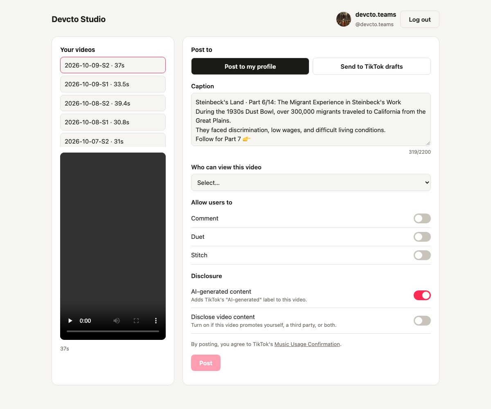

The Devcto Studio app
Devcto Studio is a desktop app for creators. It lets a creator sign in with TikTok or Google, review a finished video and upload it to their own TikTok account (Content Posting API) or their own YouTube channel (YouTube API Services).

How it works
- Log in with TikTok. The creator clicks Continue with TikTok and approves the app on TikTok's own login page. The app never sees the creator's TikTok password.
- Choose a video. The creator picks one of their finished videos and plays the preview.
- Review the post. The creator edits the caption and chooses who can view the video. There is no default: the creator must choose. They also choose whether others may comment, duet or stitch (options the creator has turned off in TikTok are shown as unavailable).
- Disclose. The creator can label the video as AI-generated and disclose promotional or branded content. Branded content cannot be set to private, as TikTok requires.
- Post. Nothing is posted until the creator presses Post and agrees to TikTok's Music Usage Confirmation (and Branded Content Policy when it applies). The app uploads the video and shows TikTok's processing status until it is published.
What the app uses from TikTok
| Product / permission | Why the app needs it |
|---|---|
Login Kit (Desktop) · user.info.basic | Show the creator's display name and avatar on the posting screen, so they always know which account they are posting to. |
Content Posting API · video.publish | Post the video to the creator's own profile with the caption, privacy, interaction and disclosure settings they chose. |
Content Posting API · video.upload | Optional: send the video to the creator's TikTok inbox as a draft, to finish and post in the TikTok app. |
The app does not read the creator's other videos, followers, messages or statistics.
YouTube uploads
The App uses YouTube API Services to upload a creator's own videos to their own YouTube channel as Shorts.
- Sign in with Google. On first use the App opens Google's own sign-in page, where the creator approves two permissions. The App never sees the Google password.
- Confirm the channel and video. Before every upload the App shows the channel it will upload to, the video file, its title, description, tags and privacy setting (public, unlisted or private), and asks for confirmation. A creator who publishes on a fixed schedule can choose to pre-approve uploads for their own channel; the App then uploads the videos they prepared at the times they set.
- Upload. The App uploads the video with the creator's settings, marks whether it is made for kids, and sets YouTube's "altered or synthetic content" disclosure for videos with AI-generated visuals or voices. It then shows the video's link.
| Google permission | Why the app needs it |
|---|---|
youtube.upload | Upload the video the creator chose to their own channel. |
youtube.readonly | Read the channel's title and ID, to show which channel the video will go to before the creator confirms. |
By using the App's YouTube features you agree to the YouTube Terms of Service; see also the Google Privacy Policy. You can revoke the App's access at any time on Google's security settings page.
Privacy by design
- The app runs on the creator's own computer. There is no Devcto Studio server and no account to create.
- TikTok and Google login tokens are stored only on that computer and are sent only to TikTok or Google.
- No analytics, advertising or tracking is built in.
- The creator can revoke access at any time in TikTok's settings or on Google's security settings page.
Full details: Privacy Policy · Terms of Service.
Frequently asked questions
Does the app post anything automatically?
On TikTok, no: every post is reviewed on the posting screen and only published when the creator presses Post. On YouTube, uploads are confirmed one by one by default; a creator can choose to pre-approve scheduled uploads of their own prepared videos to their own channel, and can stop this at any time.
Which videos can I post?
Only videos you own or have the rights to. Videos must meet TikTok's requirements (for example MP4, 3 seconds up to your account's maximum length).
How do I disconnect the app?
For TikTok, click Log out in the app and remove Devcto Studio in TikTok under Settings and privacy → Security and permissions → Apps and services permissions. For YouTube, remove Devcto Studio on Google's security settings page.
Who do I contact for help?
Email devcto.teams@gmail.com.